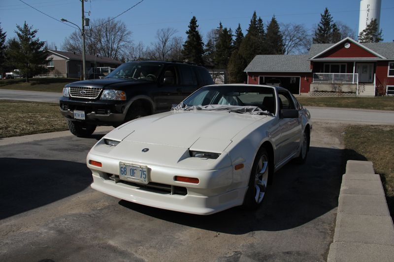
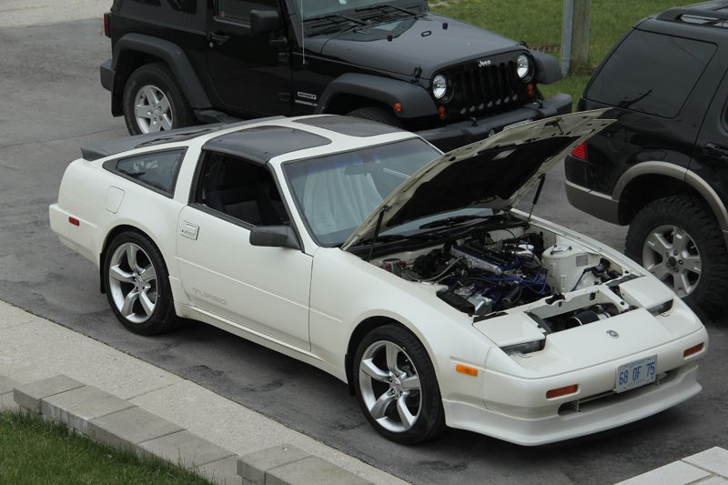

-
Just seems like every comment has been an attack. What else do you want explained. My car is lowered, and lowering the front even only the 2" the lip will from where is will make it even more of a trouble than it was (the car is lowered more than most that are street driven), resulting on the lip sitting closer to the ground than it does in most cases. Also shriking the frontal radiator opening reducing drag most people don't utilize it for that. So, lip is closer to the ground, and radiator inlet is smaller, than on most cars. So effectively utilizing the lip for more than most. I wasn't saying I am better because of this, I was merely saying this is the means I am using to accomplish this effect.
Sorry for not explaining clearer. I try and check peoples setups when I get intrigued by things they post, before I do anything that might sound like an attack, if it wasn't sorry for taking it that way. It just seems most people would rather say what you do wrong instead of seeing there side. Most people don't setout to do something stupid, constructive criticism would be much better ways of approaching things.
Ok, any questions about what why how, or for what reason I am doing something I love conversations about this stuff. Anything car related, and again I apologies for sounding like I was attacking, I thought I was being attacked.
ps, It also does look wierd, which was the primary reason for it, but also since my car is low, I don't want to shred the lip first bump -
learn to drive and you won't break it. tbo in stock location looks the best imo.
-
There are a fair number of slammed Z31s around with lips properly mounted and no issues. Like jesus94p said, it's all about how you drive.
And remember, while you're reducing drag by making the rad opening smaller, you're also reducing air to the rad and intake filter.
-
God damn that single wrapped headlight cover and gas cap cover are hideous. Worse than the stickers. ahaha. -
You make it sound like you're the only one riding low on coilovers with aftermarket lips… and then wonder why people sound antagonizedstprasinz;316265 wrote: Just seems like every comment has been an attack. What else do you want explained. My car is lowered, and lowering the front even only the 2" the lip will from where is will make it even more of a trouble than it was (the car is lowered more than most that are street driven), resulting on the lip sitting closer to the ground than it does in most cases. -
hey hey there, stay on topicNissanXRMA;316458 wrote: God damn that single wrapped headlight cover and gas cap cover are hideous. Worse than the stickers. ahaha.
But yeah, its all on how you drive. My lip sits like 1"- 1 1/2" from the ground and I don't scrape it that much. -
The front of my stock height focus is trashed from scraping driveways and speed bumps. And I crawl into them and angle the car and such. -
And ThisRB20ZR;316457 wrote: There are a fair number of slammed Z31s around with lips properly mounted and no issues. Like jesus94p said, it's all about how you drive.
And remember, while you're reducing drag by making the rad opening smaller, you're also reducing air to the rad and intake filter.
This
G-E;316477 wrote: You make it sound like you're the only one riding low on coilovers with aftermarket lips… and then wonder why people sound antagonized
Also I figured anyone serious about reducing "drag" on a track day in the radiator opening area would use racing tape (like used in professional racing) which would give them the same effect. Then remove it after said track day session so they could have max cooling, but maybe that's just me… -
Good way to create constructive critisism. I gave my reasons, and I still get shit. sweet deals lol. I'm glad we got such a supportive bunch lol… Appearantly I don't know what I am talking about, or doing. Someone donate there ever loving infinite knowledge of what why and how I have and want to acheive lol… -
Just do you stprasinz! No matter what you do someone will have a problem with it. The net brings out the F@G in a lot of peopleand they say things online they wouldnt say face to face.
-
Virtually every modification has a trade off, take what's being said as the other side of the coin and weigh it out. Lowering is a prime example. Lowering srings while they lower your center of gravity they also throw off your roll center so by itself could seem counterproductive, however most lowering springs have stiffer rates aswell. So from a performance standpoint lowering springs are better but not for daily driving. Same for this, yes you may reduce drag, but you also reduce cooling effectiveness. And while being higher less chance of damage lesseffectiveness as an airdam. So you need to weigh things out based on use and go from there. I would personally start with the tape before even mounting the TBO just to see how the reduction in airflow affects things before going too far. There is a reason for R&D. I got the SS lip for exactly the height reason, TBO I doubt will be pothole and frostheave friendly. But every driver and location is different, which is why everything is adjustable on race cars based on driver and track. -
Mine is a Gary original too, I have had no issues with it mounted in the stock location. Car has not been lowered though. I do make sure I am careful going up against parking lot curb stop things though, just in case.
I could see maybe some issues with a lowered car, just depends on how low, and you'll have to obviously understand the risk. My car does sit up a little higher in the front due to nothing in the engine bay, And in these shots, the suspension isn't settled. but it doesn't look bad.
Personally, I don't really see the need to raise it any higher, it has quite a decent clearance, unless you're slamming it to the ground as I said above.




-
Stop attacking him man!!!! lolRichard_85ZXT;323960 wrote: Virtually every modification has a trade off, take what's being said as the other side of the coin and weigh it out. Lowering is a prime example. Lowering srings while they lower your center of gravity they also throw off your roll center so by itself could seem counterproductive, however most lowering springs have stiffer rates aswell. So from a performance standpoint lowering springs are better but not for daily driving. Same for this, yes you may reduce drag, but you also reduce cooling effectiveness. And while being higher less chance of damage less effectiveness as an airdam. So you need to weigh things out based on use and go from there. I would personally start with the tape before even mounting the TBO just to see how the reduction in airflow affects things before going too far. There is a reason for R&D. I got the SS lip for exactly the height reason, TBO I doubt will be pothole and frostheave friendly. But every driver and location is different, which is why everything is adjustable on race cars based on driver and track. -
do you have a pic of how the radiator is mounted behind the bumper.
a good one, not a shitty pic. -
Lol, nice Ven, I basically said what you said I know. Although this does bring up a good point. Does anyone know how effective the SS and TBO is in the first place? Obviously it prevents air from getting under the car creating less floatalthough 95% of the time it's just cosmetic for that aspect. We rarely get to speed to make it effective. But does either the SS or TBO channel air in anyway or at any speed to increase stability? Or does it become counterproductive in that regard? Comparitive to rear spoilerswhich are often visual enhancement only and actually create drag with no downforce, like most all midsized sedans. I would think the SS to have minimal stabilization from channeling air with the countours of it, and more though still no downforce with the TBO because of the lip at the bottom edge. Aerodynamics is kind of a black art to me, general principals I get but there is some more in depth that I get but unsure of anyway to test results.


Copyright © 2006–. All rights reserved. Privacy Policy